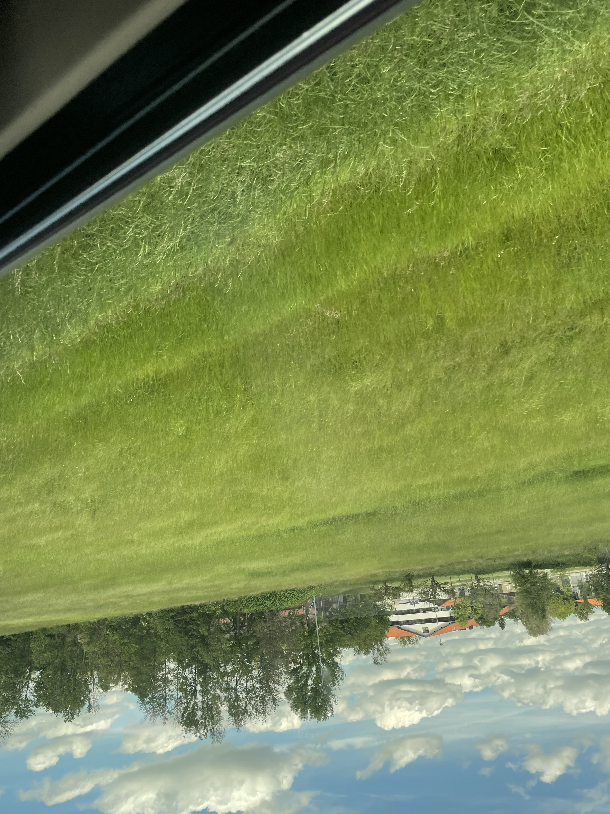

Chapter 11: The Upside Down People

Spring comes. You decide to plant a garden to harvest food in the fall. This will enable your further ascent.
You spend the spring toiling in the garden. You fertilize and till the soil. You plant seeds. You water plants.
It's nice and relaxing, but hard work.
The watermelon is getting ripe. Large pumpkins lay fat on the soil all around the garden. Big juicy tomatoes hang
off of the vine, pulling the stakes over with their weight. Massive cucumbers lay strewn within the tangled vines.
As you're getting ready for harvest, bashing noises come from the far end of the garden. An
old friend is trampling through your garden, smashing pumpkins and cucumbers, crushing tomatoes, tearing blueberry bushes
straight out of the ground with tenacious enjoyment.
You run to him.
"What are you doing?! Are you completely insane?!"
He looks at you with that faux calm expression when people are pretending like they don't know what they did wrong.
"What... You have an ego issue."
"What are you talking about?! Why would you just destroy my garden like that?!"
"Rage issues. You've got rage issues. Why are you getting so angry?"
"How do I even respond to that? You are so completely delusional and disconnected from reality that I can't even maintain
a conversation with you."
"You lack self-awareness. You do not understand the true motivations for your behavior."
"If you wanted a garden, I could've helped you build one. I love gardening. All you had to do was ask. This behavior, however
cannot ever be forgiven. I can never trust you again."
The winter is cold. You are hungry. Very hungry.
You start on a new garden. This time, you start by erecting a massive fence around the garden. You put barbed wire on top,
you put a big dog in the garden, and make trip wires around the fence that set off bells to alert of intruders. It's hard
to work alone, but you have no choice. You cannot trust even your closest allies.
Your old friend comes by, moving with nefarious intentions again. He sets off the alarm. The dog barks. He recoils in fear.
"The man on the gradient keeps his friends out of the garden. He lacks generosity in his behavior."
"Yeah. Keep bitchin. You're not coming anywhere near this place again."
"I'm starving. Let me in. You won't even entertain a conversation with your old friend?"
"No, not interested. Go find another garden to destroy."
"The man on the gradient is unkind to his friends. He won't even speak to me anymore. How cruel. He's such a jealous man.
Can't control his ego. What an awful friend. Why don't you forest creatures go screw up his garden?"
Some old aquaintances come from the forest and you feel relief expecting to hear some thoughts that are based in reality.
"Gradient Man, please allow your old friend into the garden and apologize for your behavior."
"Yes, please apologize. Your old friend will never trust you again after your heartless betrayal."
You laugh hysterically in complete and utter shock.
"What planet are you people on?! I have no way of communicating with you. Not a single one of you can perceive reality clearly
enough to hold a rational discussion with. I don't even know what to say."
"Gradient Man has no words. Gradient Man never has any words. Let's get out of here and build ourselves a garden. We'll
build a nice, big fence around it and put a big dog in there... and don't even think about letting that fucking cocksucker in
our garden. I'll tell you that much right now..."
Chapter 12: The Engines of Democracy
Title Page